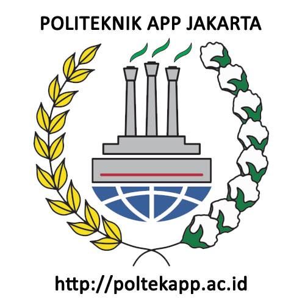

library(tidyverse)
library(readxl)
library(WDI) Pengaruh Ekspor Impor Terhadap PDRB Provinsi Jawa Timur 2008-2021
Metode Penelitian Politeknik APP Jakarta

1 Pendahuluan
1.1 Latar belakang
Pertumbuhan ekonomi adalah proses meningkatnya kegiatan perekonomian sehingga produksi barang dan jasa bertambah. Menurut Simon Kuznets dalam Todaro (2000) mendefinisikan pertumbuhan ekonomi adalah kenaikan kapasitas dalam jangka panjang dari suatu negara untuk menyediakan berbagai barang ekonomi kepada penduduknya. Tolak ukur kemajuan suatu daerah adalah dengan meningkatnya pertumbuhan ekonomi didaerah tersebut. Meningkatnya pertumbuhan ekonomi dapat dilihat dari jumlah produksi barang dan jasa yang akan meningkatkan pendapatan didaerah tersebut.
Dengan adanya keinginan setiap daerah untuk memiliki pertumbuhan ekonomi yang pesat, maka setiap daerah melakukan kegiatan jual beli dengan daerah lain, salah satunya melalui kegiatan ekspor dan impor yang dilakukan dengan negara lain. Tujuan dari dilakukannya kegiatan ekspor dan impor adalah guna untuk meningkatkan pendapatan daerah tersebut dan juga memenuhi kebutuhan daerah. Adanya kegiatan ekspor (jual) dan impor (beli) didaerah tersebut maka akan memberikan pengaruh terhadap pertumbuhan ekonomi, karena baik ekspor maupun impor keduanya sama-sama memberikan efek dan berperan terhadap kegiatan ekonomi yang akan berpengaruh pada pertumbuhan ekonomi. Menurut Mankiw (2006:76) PDRB adalah nilai pasar semua barang dan jasa akhir yang diproduksi dalam perekonomian selama kurun waktu tertentu. Pertumbuhan ekonomi dapat dilihat dari Produk Domestik Regional Bruto (PDRB), dimana PDRB ini menggambarkan kondisi atau kemampuan suatu daerah dalam mengelola sumber daya untuk menciptakan nilai tambah.
Jawa Timur adalah salah satu provinsi di pulau Jawa yang memiliki sumber daya yang dimanfaatkan untuk dijual atau ekspor, tetapi juga bukan hanya menjual atau mengekspor tetapi juga melakukan kegiatan pembelian atau impor dari negara lain, ditambah lagi dengan jumlah penduduk di provinsi Jawa Timur yang cukup banyak, maka hal ini akan berkaitan dengan kegiatan ekonomi di Jawa Timur. PDRB di Jawa Timur diperoleh dari beberapa lapangan usaha seperti pertanian, pertambangan, industi, administrasi pemerintahan, jasa-jasa, perdagangan, dan lainnya. Kondisi PDRB Jawa Timur dari tahun 2008-2021 selalu mengalami peningkatan, tetapi dalam bidang ekspor dan impor secara keseluruhan tidak selalu mengalami peningkatan atau berada pada kondisi fluktuatif. Sehingga dapat dipastikan adanya faktor lain yang mempengaruhi PDRB Jawa Timur.
1.2 Ruang lingkup
Dalam penelitian ini penulis mengambil objek penelitian dari Badan Pusat Statistik Jawa Timur. Ruang lingkup penelitian ini terdapat 3 variabel antara lain nilai ekspor keseluruhan provinsi Jawa Timur, nilai impor keseluruhan Jawa Timur, dan nilai Produk Domestik Regional Bruto Jawa Timur. Data yang digunakan adalah data yang bersifat time series yaitu dalam kurun waktu 2008-2021 dengan satuan yang telah diubah ke dalam USD guna untuk memudahkan penyetaraan mata uang secara internasional, data inilah yang kemudian menjadi objek penelitian.
1.3 Rumusan masalah
Berdasarkan uraian latar belakang diatas maka yang menjadi masalah pokok pada penelitian ini adalah:
- Apakah ekspor dan impor berpengaruh pada PDRB di Jawa Timur?
- Bagaimana hubungan ekspor dan impor terhadap peningkatan PDRB di Jawa Timur?
1.4 Tujuan dan manfaat penelitian
Berdasarkan latar belakang dan permasalahan yang ada maka tujuan dari penelitian ini adalah untuk mengetahui pengaruh ekspor dan impor terhadap PDRB Jawa Timur dan mengetahui hubungan ekspor dan impor terhadap peningkatan PDRB Jawa Timur.
Adapun manfaat dari penelitian ini antara lain:
1. Manfaat Teoritis
Penelitian ini diharapkan dapat memberikan bantuan pemikiran dan menjadi ilmu pengetahuan bagi para pembaca untuk menambah wawasan seputar ekonomi.
2. Manfaat Praktis
a. Bagi Penulis
Diharapkan penelitian ini bisa menjadi referensi bagi mereka yang ingin memperdalam tentang kegiatan ekspor, impor, dan pertumbuhan ekonomi, sehingga dengan adanya karya lain secara tidak langsung penelitian ini mengalami penyempurnaan secara terus menerus. Dan diharapkan penelitian ini juga dapat menjadi referensi bagi setiap penulis yang ingin mengetahui penelitian menggunakan sistem regresi melalui R Studio.
b. Bagi instansi
Sebagai bahan masukan dan saran guna untuk memperbaiki sistem perekonomian khususnya di daerah Jawa timur.
1.5 Package
Packages yang digunakan sebagai penunjang regresi multivariat dalam penelitian ini antara lain sebagai berikut:
2 Studi pustaka
- Ekspor
Ekspor adalah kegiatan mengeluarkan barang dari daerah pabean. Menurut Lipsey (1995), ekspor dapat diartikan sebagai total penjualan barang yang dapat dihasilkan oleh suatu negara, kemudian diperdagangkan kepada negara lain dengan tujuan mendapatkan devisa. Suatu negara dapat mengekspor barang-barang yang dihasilkannya ke negara lain yang tidak dapat menghasilkan barang-barang yang dihasilkan negara pengekspor. Menurut Salvatore (1997), terdapat beberapa alasan sehingga dilakukannya ekspor oleh suatu negara, antara lain:
a. Keinginan untuk memenuhi berbagai kebutuhan yang tidak dapat dipenuhi dari produksi atau hasil dalam negeri, termasuk kebutuhan yang dapat diproduksi namun diperlukan biaya yang lebih tinggi dibandingkan jika diproduksi di luar negeri.
b. Keinginan suatu negara untuk memperluas pemasaran komoditas domestik untuk meningkatkan sumber devisa bagi kegiatan pembangunan.
- Impor
Impor adalah kegiatan memasukan barang ke dalam daerah pabean. Impor bertindak sebaliknya daripada ekspor, saat ekspor dapat meningkatkan pendapatan nasional maka impor dapat menambah pengeluaran dan menurunkan pendapatan nasional suatu daerah. Menurut Sukirno (2011) aliran barang impor dapat menimbulkan aliran keluar atau bocoran dari aliran pengeluaran sektor rumah tangga ke sektor perusahaan yang pada akhirnya menurunkan pendapatan nasional yang mungkin dapat dicapai. Tetapi disatu sisi impor terdapat sisi baiknya yaitu membantu negara memenuhi kebutuhan dalam negeri apabila barang atau jasa yang diimpor tidak ada di negara atau daerah tersebut, hal ini selaras dengan yang dijelaskan dalam teori Hecksher-Ohlin (dalam Appleyeard, Field dan Cobb, 2008) menyatakan bahwa suatu negara akan mengimpor produk/barang yang menggunakan faktor produksi yang tidak atau jarang dimiliki oleh negara tersebut. Kegiatan ini akan menguntungkan bagi negara tersebut dibandingkan melakukan produksi sendiri namun tidak secara efisien.
- Pertumbuhan Ekonomi
Pertumbuhan ekonomi dapat diartikan sebagai perkembangan kegiatan perekonomian yang menyebabkan barang dan jasa yang dihasilkan masyarakat meningkat (Sukirno, 2012). Salah satu indikator untuk melihat kondisi ekonomi suatu daerah adalah PDRB. PDRB pada dasarnya adalah jumlah nilai tambah yang dihasilkan oleh seluruh unit usaha dalam suatu negara tertentu, atau merupakan jumlah dari nilai barang dan jasa yang diproduksi oleh seluruh unit ekonomi. Sjafrizal (2008), menjelaskan bahwa PDRB merupakan penjumlahan dari konsumsi, investasi, pengeluaran pemerintah, dan ekspor, dikurangi impor.
3 Metode penelitian
3.1 Data
Berikut adalah data yang digunakan sebagai objek penelitian, data dibawah ini merupakan data nilai ekspor, impor, dan PDRB Provinsi Jawa Timur dengan satuan USD.
| Tahun | Ekspor (X) | Impor (S) | PDRB (Y) |
|---|---|---|---|
| 2008 | 10.595.255.387 | 17.846.110.380 | 50.406.934.070,51 |
| 2009 | 10.791.937.520 | 11.321.978.983 | 57.132.529.600,35 |
| 2010 | 15.340.476.475 | 15.984.224.882 | 65.337.154.528,48 |
| 2011 | 19.062.771.105 | 23.003.767.092 | 73.906.433.952,92 |
| 2012 | 16.249.221.758 | 24.477.248.309 | 82.361.072.967,93 |
| 2013 | 15.508.414.141 | 25.046.102.829 | 91.181.365.680,85 |
| 2014 | 1.557.982.463 | 1.975.151.309 | 101.433.644.194,26 |
| 2015 | 17.120.185.401 | 19.286.534.433 | 111.559.508.867,53 |
| 2016 | 18.952.202.820 | 18.589.422.450 | 122.393.186.838,38 |
| 2017 | 19.613.196.004 | 22.115.653.638 | 132.759.791.820,66 |
| 2018 | 20.393.262.984 | 25.733.627.908 | 144.357.676.971,26 |
| 2019 | 20.284.491.411 | 23.335.474.513 | 154.698.074.511,84 |
| 2020 | 19.216.163.872 | 19.985.674.723 | 151.680.188.932,59 |
| 2021 | 22.780.677.951 | 27.479.470.825 | 161.883.768.405,32 |
Penelitian ini menggunakan data sekunder dengan bentuk data time series 2008-2021, data yang dipakai ialah data yang telah diolah dengan sumber Badan Pusat Statistik Jawa Timur.
setwd("C:/Metodologi Penelitian/Tugas UAS")
Hizkia<-read_excel('latihan.xlsx')
library(readxl)
reg1<-lm(Y~X+S,data=Hizkia)
Hizkia$m<-resid(reg1)
plot(Hizkia$X,Hizkia$m,xlab="Nilai Ekspor",ylab="error")
abline(h=0)
library(readxl)
Hizkia$m<-resid(reg1)
plot(Hizkia$Y,Hizkia$m,xlab="Nilai PDRB",ylab="error")
abline(h=0)
3.2 Metode analisis
Teknik analisis yang digunakan dalam penelitian ini adalah teknik kuantitatif deskriptif. Metode yang dipilih adalah regresi multivariat dengan 2 variabel independen yaitu ekspor dan impor dan 1 variabel dependen yaitu PDRB. Penelitian ini bertujuan untuk mencari hubungan antara ekspor (X) dan impor (S) dengan PDRB (Y). Spesifikasi yang dilakukan adalah:
\[ Y=\beta_0 + \beta_1X+\beta_2S+\mu \] Di mana \(y_t\) adalah hwy dan \(x_t\) adalah cty. Di mana Y adalah PDRB Jawa Timur dan X adalah nilai ekspor Jawa Timur dan S adalah nilai impor Jawa Timur.
4 Pembahasan
4.1 Pembahasan masalah
| Variabel | Coefficient | Std.Error | t-value | Prob (.) |
|---|---|---|---|---|
| Intecerpt | 4.733e+10 | 2.844e+10 | 1.664 | 0.1243 |
| X | 7.293e+00 | 3.467e+00 | 2.104 | 0.0592 |
| R squared | 0.4038 | |||
| Adjusted R-Squared | 0.2954 | |||
| F-Statistic | 3.725 | |||
| Prob(F-statistic) | 0.05815 |
Hasil regresi yang telah didapat dimasukan ke dalam rumus persamaan yang ada sehingga menjadi:
\[ Y= 4.733 + 7.294 X+(-2.97 S) \]
Ekspor pada pertumbuhan ekonomi berperan dalam peningkatan pertumbuhan ekonomi pada PDRB dikarenakan nilai variabel X yang positif, tetapi jika dilihat pada hasil regresinya ekspor tidak sepenuhnya mempengaruhi PDRB di Jawa Timur atau dalam arti lain peningkatan PDRB bukan hanya dipengaruhi ekspor saja tetapi terdapat faktor lain. Impor pada pertumbuhan ekonomi berbanding terbalik dengan ekspor, impor berpengaruh negatif terhadap PDRB Jawa Timur dikarenakan nilainya yang negatif, tetapi impor juga tidak sepenuhnya mempengaruhi PDRB. Jika diasumsikan setiap kenaikan nilai ekspor 1, maka PDRB akan meningkat sebesar 7.294. Tetapi jika diasumsikan nilai impor 1, maka PDRB akan ada penurunan sebesar 2.971.
Nilai Adjusted R-squared sebesar 0.2954 menjelaskan bahwa variabel independen di dalam penelitian ini dapat menjelaskan variasi variabel dependen sebesar 29,54 persen. Nilai F-statistik sebesar 3.725 menunjukkan bahwa variabel independen dalam jangka panjang seperti ekspor, impor berpengaruh secara bersama-sama terhadap tingkat pertumbuhan ekonomi atau terhadap PDRB.
4.2 Analisis masalah
Hasil regresinya adalah
library(readxl)
Hizkia<-read_excel('latihan.xlsx')
reg1<-lm(Y~X+S,data=Hizkia)
summary(reg1)
Call:
lm(formula = Y ~ X + S, data = Hizkia)
Residuals:
Min 1Q Median 3Q Max
-4.639e+10 -1.858e+10 9.087e+08 2.445e+10 4.861e+10
Coefficients:
Estimate Std. Error t value Pr(>|t|)
(Intercept) 4.733e+10 2.844e+10 1.664 0.1243
X 7.293e+00 3.467e+00 2.104 0.0592 .
S -2.971e+00 2.844e+00 -1.045 0.3186
---
Signif. codes: 0 '***' 0.001 '**' 0.01 '*' 0.05 '.' 0.1 ' ' 1
Residual standard error: 3.21e+10 on 11 degrees of freedom
Multiple R-squared: 0.4038, Adjusted R-squared: 0.2954
F-statistic: 3.725 on 2 and 11 DF, p-value: 0.05815Setiap kenaikan nilai ekspor dengan diasumsikan nilainya 1, maka dapat meningkatkan PDRB sebesar 7.293 dengan S yang sama,tetapi nilai impor berpengaruh negatif pada PDRB Jawa Timur, jika diasumsikan nilai impor 1 maka PDRB akan ada penurunan 2.971.
5 Kesimpulan
Setelah dilakukan penelitian melalui sistem regresi multivariat, maka dapat disimpulkan antara lain:
- Nilai ekspor tidak sepenuhnya berpengaruh terhadap PDRB, tetapi nilai ekspor mempunyai nilai positif terhadap pertumbuhan PDRB hal ini sesuai dengan teori perdagangan internasional, apabila jumlah barang atau jasa yang di ekspor ke luar negeri semakin banyak maka di dalam negeri harus memproduksi barang dan jasa lebih banyak juga. Semakin banyak barang yang di ekspor ke luar negeri maka arus modal yang masuk ke dalam negeri juga dalam jumlah yang banyak.
- Nilai impor memiliki efek negatif terhadap PDRB, dikarenakan apabila impor dilakukan melebihi ekspornya maka akan terjadi defisit ekspor yang memungkinkan untuk menurunkan PDRB. Sehingga sebaiknya setiap daerah untuk tidak berlebihan dalam melakukan kegiatan impor, agar dapat tercapai suatu surplus ekspor yang berakibat pada pertumbuhan ekonomi didaerah tersebut.
6 Referensi
Affandi, A., & Gunawan, E. (2018). PENGARUH EKSPOR, IMPOR DAN JUMLAH PENDUDUK TERHADAP PDB INDONESIA TAHUN 1969 -2016. Jurnal Perspektif Ekonomi Darussalam (Darussalam Journal of Economic Perspec, 4(2), Article 2. https://doi.org/10.21157/j.ked.hewan.v%vi%i.13021
Nofinawati, N., Lubis, N. I., & Nasution, J. (2017). PENGARUH EKSPOR DAN IMPOR TERHADAP PRODUK DOMESTIK REGIONAL BRUTO (PDRB) PROVINSI SUMATERA UTARA TAHUN 2008-2015. Al-Masharif: Jurnal Ilmu Ekonomi Dan Keislaman, 5(1), Article1. https://doi.org/10.24952/masharif.v5i1.1415
Hodijah, S., & Angelina, G. P. (2021). ANALISIS PENGARUH EKSPOR DAN IMPOR TERHADAP PERTUMBUHAN EKONOMI DI INDONESIA. Jurnal Manajemen Terapan Dan Keuangan, 10(01), Article 01. https://doi.org/10.22437/jmk.v10i01.12512
Ginting, A. M. (2017). ANALISIS PENGARUH EKSPOR TERHADAP PERTUMBUHAN EKONOMI INDONESIA. Buletin Ilmiah Litbang Perdagangan, 11(1), Article 1. https://doi.org/10.30908/bilp.v11i1.185
Kisnawati, B., Irianto, I., & Amrul, R. (2022). ANALISIS EKSPOR DAN IMPOR DALAM MENINGKATKAN PRODUK DOMESTIK REGIONAL BRUTO (PDRB) DI PROVINSI NUSA TENGGARA BARAT. Nusantara Hasana Journal, 2(2), Article 2.
155/PMK.04/2022 tentang Ketentuan Kepabeanan di Bidang Ekspor. (n.d.).
View of Pengaruh Ekspor dan Impor terhadap Pertumbuhan Ekonomi di Provinsi Aceh. (n.d.). Retrieved January 19, 2023, from https://journal.arraniry.ac.id/index.php/JIBES/article/view/1771/932
Pengertian Ekspor | hestanto. (n.d.). Retrieved January 19, 2023, from https://www.hestanto.web.id/ekspor/
Multivariat & Dummy regression. (n.d.). Retrieved January 19, 2023, from https://www.krisna.or.id/metopel/meeting3/index.html#/bandingkan-2-model